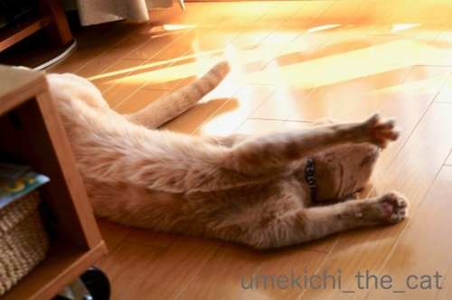
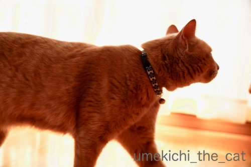
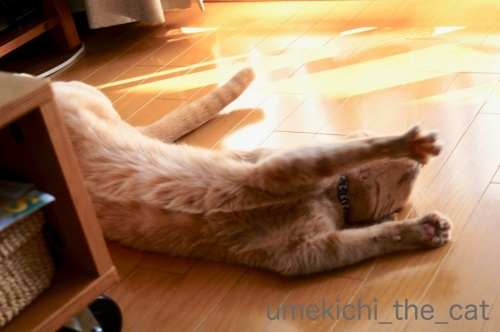
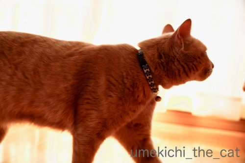

にゃんこエネルギーチャージ [梅吉]
梅吉さんの最近の日課は
窓辺でのエネルギーチャージ。
目を細めちゃってます＾＾
家に差し込む日差しの角度が変わって陽だまりが貴重になってきました。
短い時間のお楽しみ。陽だまりと一緒に移動してます。
お日様をいっぱいチャージして満足〜！

満足してエネルギー放出！？

エネルギー満タンだと反りがいいねwww

その後フルチャージで向かったのは
梅吉さんの巣 (^_^;)
掃除の途中でクッションを積み上げておいたら悲しげな顔して上に乗ってましたw
にゃんこってこういう「かわいそうなわし」みたいな小芝居するのが得意じゃないですか？
こうやって下僕を操ろうとするのが本当にうまい・・・
![[猫]](https://blog.ss-blog.jp/_images_e/101.gif) いつもは ぬくい わしのす・・・きょうは ぬくない・・・
いつもは ぬくい わしのす・・・きょうは ぬくない・・・
はいはい。今直しますよ！湯たんぽも仕込みます！！
ちゃんと巣を整えて差し上げましたw
お日様も良いけど湯たんぽの温もりも大切なエネルギー源の様です。
前記事で触れた湯たんぽのお話。
先日ベッドに入って湯たんぽに足をくっつけたら何か湿っぽい。
慌てて確かめるとどうもお湯が漏れ始めていた？
白くなっているあたり怪しい感じです。
よく見ると下の方は裂けて来ていました。
が、どちらも水漏れ箇所ではなかった様子。
お湯を入れた時に注ぎ口外側に溜まったお湯が布団を湿らせていただけだった様なのですが
ここまで劣化していたらいつ崩壊してもおかしくない。
10年近く使って十分役割は果たしたかなと新しいのを買うことにしました＾＾
２〜3日中に届く予定です。
別の日の伸び〜〜〜〜！！！！！
 ↑ガブッと一押し↑
↑ガブッと一押し↑
百貨店の台湾フェスに行って来ました。
場所が手狭な上に混雑が半端なくお目当の麺線（めんせん：にゅうめんみたいなの）
台湾風唐揚げだけ買って早々に切り上げて来ちゃいました。
（人出云々というよりどのブースもひたすら手ぎわが悪かった様な・・・）
1時間待ちの行列なんかもあったりして若い方は黙々と並んでいましたが
私たちおじさんおばさんはどうもこういうのが苦手になってきて。。。
堪え性がなくなって来ているのかしらね〜。
お家に帰ってゆっくりお夕飯。
おっとが知人からもらったお土産江丹別の青いチーズ。
（江丹別：えたんべつは旭川にある小さな町です。）
海外のブルーチーズはしょっぱくて（北海道弁w）食べにくい物も多いのですが
これはまろやかでとても美味しかったです。
ブルーチーズ特有のあのニオイもあまりしません。（好きな方には物足りないかも！？）
トーストに乗せて食べるのが美味しいのだとか。
次の週末はそれだなwww
美味しいおつまみでワインを空けた週末でした ( ´艸｀)
窓辺でのエネルギーチャージ。
目を細めちゃってます＾＾
家に差し込む日差しの角度が変わって陽だまりが貴重になってきました。
短い時間のお楽しみ。陽だまりと一緒に移動してます。
お日様をいっぱいチャージして満足〜！

満足してエネルギー放出！？

エネルギー満タンだと反りがいいねwww

その後フルチャージで向かったのは
梅吉さんの巣 (^_^;)
掃除の途中でクッションを積み上げておいたら悲しげな顔して上に乗ってましたw
にゃんこってこういう「かわいそうなわし」みたいな小芝居するのが得意じゃないですか？
こうやって下僕を操ろうとするのが本当にうまい・・・
はいはい。今直しますよ！湯たんぽも仕込みます！！
ちゃんと巣を整えて差し上げましたw
お日様も良いけど湯たんぽの温もりも大切なエネルギー源の様です。
前記事で触れた湯たんぽのお話。
先日ベッドに入って湯たんぽに足をくっつけたら何か湿っぽい。
慌てて確かめるとどうもお湯が漏れ始めていた？
白くなっているあたり怪しい感じです。
よく見ると下の方は裂けて来ていました。
が、どちらも水漏れ箇所ではなかった様子。
お湯を入れた時に注ぎ口外側に溜まったお湯が布団を湿らせていただけだった様なのですが
ここまで劣化していたらいつ崩壊してもおかしくない。
10年近く使って十分役割は果たしたかなと新しいのを買うことにしました＾＾
２〜3日中に届く予定です。
別の日の伸び〜〜〜〜！！！！！
百貨店の台湾フェスに行って来ました。
場所が手狭な上に混雑が半端なくお目当の麺線（めんせん：にゅうめんみたいなの）
台湾風唐揚げだけ買って早々に切り上げて来ちゃいました。
（人出云々というよりどのブースもひたすら手ぎわが悪かった様な・・・）
1時間待ちの行列なんかもあったりして若い方は黙々と並んでいましたが
私たちおじさんおばさんはどうもこういうのが苦手になってきて。。。
堪え性がなくなって来ているのかしらね〜。
お家に帰ってゆっくりお夕飯。
おっとが知人からもらったお土産江丹別の青いチーズ。
（江丹別：えたんべつは旭川にある小さな町です。）
海外のブルーチーズはしょっぱくて（北海道弁w）食べにくい物も多いのですが
これはまろやかでとても美味しかったです。
ブルーチーズ特有のあのニオイもあまりしません。（好きな方には物足りないかも！？）
トーストに乗せて食べるのが美味しいのだとか。
次の週末はそれだなwww
美味しいおつまみでワインを空けた週末でした ( ´艸｀)

カフェオレ色の梅吉

梅吉 2023年8月10日 永眠


梅吉と出会った譲渡会

犬猫の理由なき殺処分ゼロ
妄想広告
UMEKICHI 光

爆発的に早い！
時々攻撃的！
Thanks to Mr.Boss365
爆発的に早い！
時々攻撃的！
Thanks to Mr.Boss365

陽だまりが恋しい季節になりましたね。
ユキは寒いのが好きですが、モモは寒がりです。
陽だまりを求めて彷徨っています。
梅吉さんの気持ちはよくわかりますがエネルギー放出しすぎです^^;
by riverwalk (2018-11-26 00:15)
梅吉さんのエネルギーチャージ後の運動はヨガみたいですね。
by 旅爺さん (2018-11-26 06:05)
緊急の時はペットボトルでも代用可能ですね。
熱過ぎるとフニャフニャになるので
注意が必要ですが＾＾；
我が家では窓際にニャンが並んで充電してます＾＾
by ぽちの輔 (2018-11-26 06:47)
お日様チャージは大切なお仕事ですね(#^.^#)
そして放出は可愛過ぎます♪
梅吉さんの可愛さを私がたくさんチャージしましたよ♪
いつもと違う・・・ぬくぬくが無い・・・
悲しそうな顔に見えますね(;^_^A
私が勝手に思っているだけなのかもしれませんが
一人ポツンといると抱きしめたくなります♪
by きぃ (2018-11-26 06:55)
日向ぼっこが気持ちよいですよねぇ( ^ω^ )
うちも昼間の出窓の鍋が大人気です=(^.^)=
そうそう、ニャンコって「悲しそうな表情」が上手で
下僕としては早く満足してもらわなきゃと焦ります(⌒-⌒; )
ただうちの場合は、かみさんが抱っこすれば
それだけでご機嫌で「私の努力は何？」状態になることが多いですが(ｰ ｰ;)
by ニッキー (2018-11-26 08:11)
梅吉さんの伸び～は手がパーになってて
とっても気持ちがよさそうです。
by marimo (2018-11-26 10:02)
10年近く使ったのなら
もう、お役目を終えてもいいかもしれないですね^^
あたらしいもの楽しみだね！
あおも窓辺でエネチャージしてますよ。
すごいポカポカになるから
そのあと一緒にソファーで昼寝して貰うと、わたしもポカポカ(笑)
by リュカ (2018-11-26 10:08)
湯たんぽ10年とは長く使われましたね！
さすがにゴムが劣化しちゃいますね。
梅吉さんは窓辺で太陽のエネルギーチャージですね(^^)
by ma2ma2 (2018-11-26 10:19)
ひなたぼっこチャージ、いい感じー！
デパートの催事のごった返しは私も苦手です。
一時間も並ぶなんて発狂しそう(^_^;)
by よーちゃん (2018-11-26 11:04)
こんにちは。
梅吉君！！いい感じのソリです。反り猫？バンザイポーズ。
お腹のセンターラインの毛がちょっと不思議な感じです。
ファスナーがありそうな形状？もしかして、何かを収納？
日光浴→ソーラー→リチウム電池搭載か？
梅吉君の名演技に騙されましょう！！正しい下僕のお仕事です。
それにしても、ちょっと落ち込んだスネた横顔は可愛い！！
別の日の伸び？充電し過ぎで「発火の恐れあり」の伸び方です！？(=^･ｪ･^=)
by Boss365 (2018-11-26 12:15)
梅吉さんは床でもなが~~いですね。びよーん猫でも梅吉さんの写真がダントツに良かったですよ。かわいそうなわしの所在なさげな様子も良いです。そんな顔しなくてもおかーさんがすぐ整えてくれるのに~。
湯たんぽはうちでも来たばかりの子猫達に支給してました。クマのぬいぐるみに入ってるタイプなのでそのまま猫達のお友達として置きっ放しです。獣医さんに連れて行くときもキャリーに一緒に入れます。
by zombiekong (2018-11-26 12:16)
梅吉さん、薄いカーテンの向こうから、
梅吉さんの小さな寝息が聞こえてきそうです。
そして梅吉さんからは、お日様の良い匂いがしてきそうですね。
温めた分、伸びが良いです。
あっちからこっちまで、持てないほどに伸びてませんか（笑）
我が物顔の梅吉さん（笑）忠実な下僕がいて幸せが溢れています。
言葉はなくても下僕殿に、気持ちを察知させるのは凄いです。
by kiki (2018-11-26 14:21)
あ～この悲しげな表情・・・(^▽^;)
ウチでも「お腹減ってもう動けない」風の行き倒れや「寒くて凍えそう」的な縮こまり「退屈で死にそう」オーラ全開のアゴ乗せポーズによく出くわします。
どこの劇団で勉強してきたん？！とブツブツいいながら、せっせとお世話してしまいます(≧▽≦)
リビングにたっぷり日の光が届いていいですね。
ウチは近所のマンションに遮られて寒い季節には日差しが届きません・・。
by ゆきち (2018-11-26 15:26)
週末は関東もポカポカと日差しが入りました。
日なたで猫たちがくつろぐ姿は、ホント嬉しいし、癒されます。
お日様チャージする猫たちの光景に、人間達もほっこりチャージ(^^♪
梅吉さん、湯たんぽが好きなんですね。
我が家も先日導入したのだけど、
これジャマ！といって全く相手にしてもらえてません。
どうすれば気に入ってもらえるのかしら？
柔らかいタイプにしたのだけどなぁ。うーーーむ（泣）
by morichan (2018-11-26 17:01)
猫は暖かいところを探すのが得意ですね(^_^)
家では寒くなると湯たんぽを自分が使ってます・・・。
美味しそうなブルーチーズですね。
自分の場合は特有の匂いがあるチーズを好んで食べるので、その時はいつも妻が引いてます(^_^;)
by kou (2018-11-26 19:49)
のび～～～の後に、くるんと丸くなる。
とても対照的ですがどちらも癒されますね。 ^^)
「かわいそうなワシ」の演技、
役者でんなー！梅きっちゃん！！なーんてね。^^;
ウチのも、ボロバレの小芝居、よくやります。
by yes_hama (2018-11-26 21:13)
充電完了後はもちろん放電ですよね^^
小芝居（笑）、分かります！しかも大げさですよね^^;
そういうところは、ねこは欧米人っぽいのかしら・・・
ゆたんぽ、ドイツのやつですか？
さっきいろいろ見ていて、とりあえず日本製の蓄電式のやつを
ポチってみました！（あっちは湯漏れが怖いので・・・）
「しょっぱい」って北海道弁？こっち（関東）でも使いますけど
意味が違うのかしら？（塩っぱい）
by Ja-Kou66 (2018-11-27 00:50)
ぐわ～～～～～～～～～と伸びてますね^^
ニコニコもやろう^^
by ニコニコファイト (2018-11-27 06:45)
riverwalkさん＞
ユキちゃんも寒がりだったらお膝に乗ってくれそうなのに・・・
モモちゃんは梅吉と一緒の寒がりさんですね！
寝ていたらそっと毛布をかけてあげてください＾＾
エネルギー放出、
お腹をわしゃわしゃっと触って私も協力してます(*>艸<)
旅爺さん＞
梅吉は猫のポーズ得意なんですよ(*>艸<)
私のヨガの先生は梅吉でーす。
ぽちの輔さん＞
ペットボトル湯たんぽ、
いつもの癖で沸騰したお湯を入れてしまいそうですw
ニャンズの皆さんが窓辺に並んだ様子は壮観ですね！！
きぃさん＞
梅吉のエネルギー届きましたか＾＾
私はお腹をわしゃわしゃしてエネルギーをもらいました！
あ、ぽつんとして悲しそうな顔をしていると
まずはぎゅ！は必須ですよ〜。
迷惑そうな顔されますがやめられませんwww
ニッキーさん＞
ニッキーさんちのお鍋が並んだ出窓は日当たり良好ですものね＾＾
とりあえず、ニッキーさんに「悲しそうな表情」は
見せてくれるのですね！
最後はゴッドマザー様に落ち着くとしても
それはニッキーさんへの期待の表れ！？に違いないと思ってます(≧▽≦)
marimoさん＞
手もパーしちゃう快適さ！？( ´艸｀)
窓辺から急に移動して来てごろん！と倒れた時は具合悪いのかと思いましたが
大満足の伸び〜で安心しました(≧▽≦)
リュカさん＞
10年前に買った時よりも
湯たんぽ自体のデザインが豊富になっててびっくりした！
湯たんぽ業界も頑張っているのねーって思いましたよ＾＾
また１０年使える様な丈夫なのをって同じメーカーのを買いました。
にゃんこがポカポカになっているのわかります！！
長毛種さんなら保温力も良さそうよw
ma2ma2さん＞
お湯入れ替えるのは夜であまりじっくりみてなかったのですが・・・
昼の日差しの中でじっくり湯たんぽを観察して劣化具合にびっくりでした！
大崩壊する前に気づいてよかったです＾＾
よーちゃん＞
日向ぼっこするとほかほか梅吉が出来上がります＾＾
お日様の良い匂いもするんですよー！！
先日「象印食堂」では辛抱強く並びましたが
ごった返した中の1時間行列は悩むまでもなく却下、でしたw
Boss365さん＞
ファスナー開けてムキムキのお兄さんが出てくるかと思ってたんですが
梅吉はリチウム電池搭載？
動力は電池とカリカリでハイブリットな仕様でしょうか( ´艸｀)
災害時にも強いw
梅吉が得意なのは可哀想な顔とコレじゃない顔w
下僕はどちらにも弱い、というか大好物で
そんな顔をしている梅吉を喜んでお世話させてもらっております(｀_´)ゞ
zombiekongさん＞
びよーん猫見ていただけたのですね＾＾
もうだいぶ前に投稿したのでかなり下の階層に写真が埋もれちゃってて
探すのに苦労されたのではないでしょうかm(_ _)m
クマさんのぬいぐるみタイプの湯たんぽありました！
そうかー＾＾あれはそのままお友達になるのですね。
梅吉が幼い時に買っていたら良いガブ友になってただろうなぁ・・・
いまはおっとの手ががぶ友ですけどwww
kikiさん＞
カーテンの向こう、
気持ちが良いのでしょうか。時々ごろごろ言っている時があります ( ´艸｀)
日向ぼっこの後はぬくぬく＆良い匂いです！
もちろんそれらは逃す事なく堪能しておりますm(_ _)m
にゃんこは本当に自分の意思を伝える表情作るのがうまいなぁと感心します。
生態系（家庭）の頂点に君臨する様になっているのですね＾＾
ゆきちさん＞
こてつくんも役者ですねー0(≧▽≦)0
ほんと、どこで学んできたんでしょうねw
忠実な下僕のいる家ではすべての猫様が名優！？
リビングに陽が差し込むのは午前中の短い時間のみです。
西日がガンガン当たる部屋は夏場でも時々梅吉がチャージしてますが
暑くて人間が近づけませんwww
morichanさん＞
暑い、熱いと言っていた日差しも心地よくなりましたよね＾＾
この時期は陽だまりでくつろぐ猫につい誘われ
私まで陽だまりチャージしちゃいます(^_^;)過充電？
湯たんぽ購入、今週末からまた寒くなるみたいですね。
きっと湯たんぽの素晴らしさに気づいてくれるはず！！
kouさん＞
kouさんも湯たんぽ派ですか＾＾
あの柔らかな温もりは電気毛布では味わえないですよねー。
私も割と匂いがち（笑）なチーズが好きです！
昔、やる気満々のチーズを買って電車に乗ったら
「なんか、たくわんの匂いしない？」と聞こえてきたことがありますwww
yes_hamaさん＞
伸びても丸まってもにゃんこは可愛いですよね＾＾
梅吉はさらに丸まってダンゴムシ状態でけりけりしますが
それも可愛いですw
アズ氏も役者、ですか！( ´艸｀)
人間の小芝居には冷ややかな気持ちになりますが
相手が猫様だと進んでだまされたい、と思いますよねー。
Ja-Kou66さん＞
どのお家のにゃんこも小芝居をされる様ですね＾＾
すでにDNAに組み込まれているのでしょうかw
あ、蓄電式の湯たんぽも気になりました！もちもん日本製の！！
（C国のは発火するかもしれないしw）
使い心地ぜひお聞きしたいです。
今回は同じ使用感を求めてドイツ製の湯たんぽにしちゃいましたけど・・・
しょっぱい＝塩っぱい、言いますか。
標準語は「塩辛い」と思っていました。
関東で使うなら江戸っ子っぽいイメージが＾＾
ニコニコファイトさん＞
寒い季節に縮こまった体を伸ばすにはピッタリかも＾＾
私も毎朝のび〜〜〜〜！！
ただし無理のない範囲でね(≧▽≦)
by ちぃ (2018-11-27 17:35)
小芝居上手の先生に拍手！！＾＾
by KENT0mg (2018-11-28 13:47)
窓とカーテンの間あったかいですよね(*^^*)
湯たんぽの水漏れは早急に対処せねば！布団ぐっしょりになる前にぜひお買い替えを(^_^;)
サイドバーに「連絡取りたい方へ」って設置されてますがクリックしたら404エラーが出ますよ。修正中だったらおせっかいでごめんなさい。
by palpal (2018-11-28 15:16)
梅吉さんの見事な伸びっぷり～～～すごい！
真似しましょう＾＾
きょうはぬくない‥って＾＾；
チーズ美味しそうですね～あんまりきついのは苦手なんで、ちょうど良さそう＾＾
by sana (2018-11-28 18:52)
おお・・・カーテン越しの王子、神秘的☆ クレオパトラ様に愛でられた子のようで・・・。
by Ginger (2018-11-28 19:54)
KENT0mgさん＞
鳴り止まぬ拍手、ありがとうございまーす0(≧▽≦)0
palpalさん＞
窓とカーテンの間一緒に日向ぼっこしたくなりますが
この季節とはいえ紫外線が怖いので自粛してますwww
湯たんぽはNEWになりました！
10年前に買ったのとは（同じメーカーの買った）
材質が格段に進歩している様な気がするー。
sanaさん＞
私も起き抜けに梅吉の様にノビーっと反る様にしています＾＾
転がるのは・・・のたうちまわっている様にし見えないと思うので
やめておきますw
チーズ、私も実は国産の食べやすいのが一番美味しいかなって思ってます ( ´艸｀)
Gingerさん＞
うふふ♡
我が国的言えば、御簾ごしのやんごとないおかた、でしょうかー0(≧▽≦)0
by ちぃ (2018-11-29 13:25)